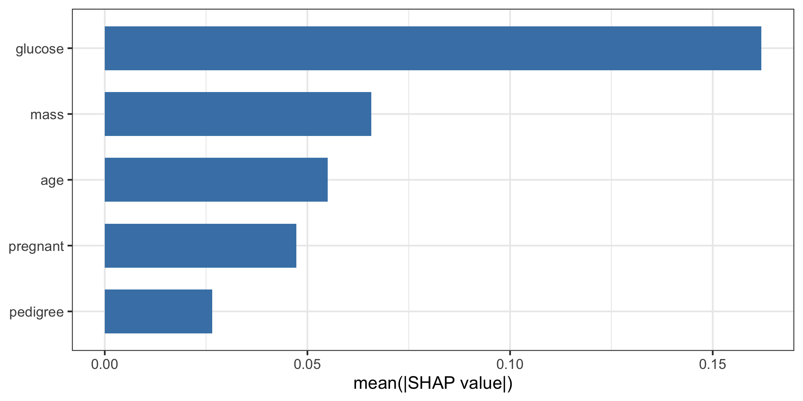
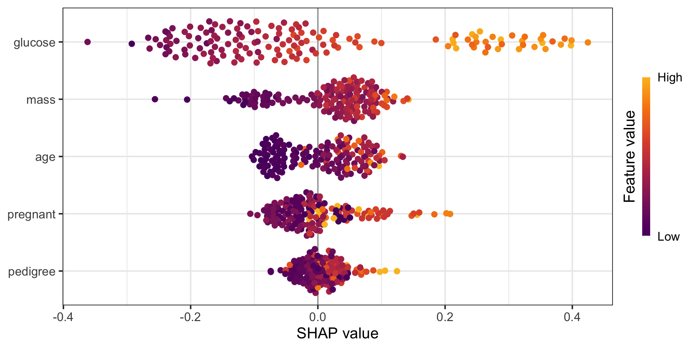
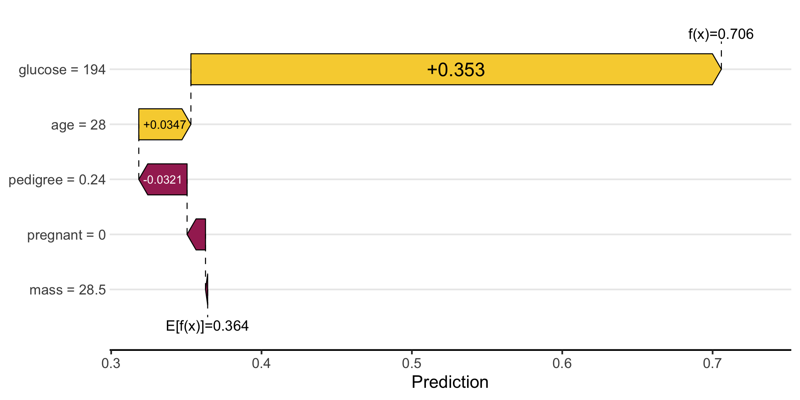
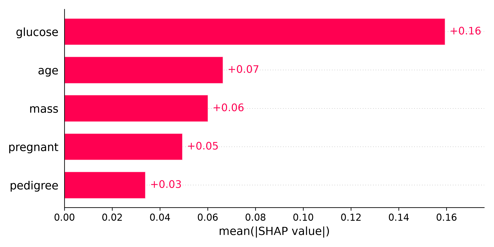
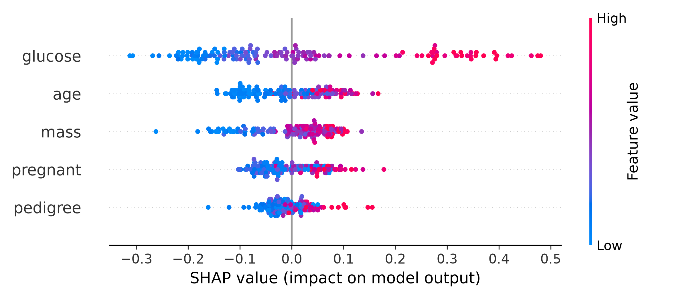
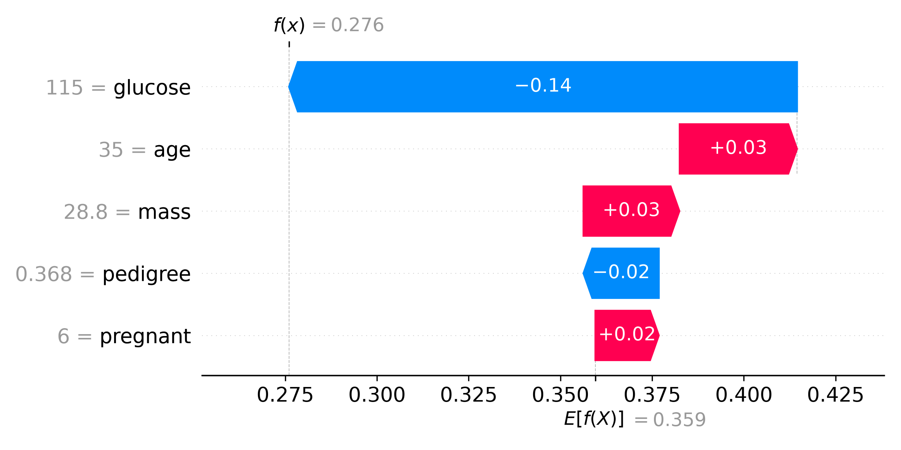

# Packages for this exercise. If one is missing, remove the # and run this line once:
# install.packages(c("tidyverse", "tidymodels", "ranger", "kernelshap", "shapviz"))
library(tidyverse)
library(tidymodels)
library(kernelshap) # computes SHAP values for any model
library(shapviz) # plots SHAP values
theme_set(theme_bw()) # white background for every plot
options(pillar.sigfig = 3) # show three significant figures in tablesExercise 9.2 — SHAP values: global and local explanations
Exercise 9.1 ranked the variables for the forest as a whole. It did not say which way a variable pushes the risk, and it said nothing about any one patient. SHAP values do both. For every patient and every variable, a SHAP value says how much that variable moved this patient’s predicted probability away from the average prediction.
Goal. In this exercise you will:
- compute SHAP values for the test patients and check that they add up to the prediction;
- read two global plots: the mean absolute SHAP bar plot and the beeswarm;
- read the waterfall plot for one patient.
NoteThe plots are for looking at
The code for every plot is folded away just above it, in case you are curious, and all of it is in the notebook linked at the top of each tab. You are not expected to write it yourself.
Download this exercise as an R Markdown notebook (.Rmd): the text and every code cell of the R version, including the code for the plots, with the blanks left for you to fill in. Open it in RStudio and run it a chunk at a time.
Packages and data
The same data (data/diabetes_clean.csv), outcome and five predictors as Exercise 9.1.
diabetes <- read_csv("data/diabetes_clean.csv") |>
select(pregnant, glucose, mass, pedigree, age, diabetes) |>
mutate(diabetes = factor(diabetes, levels = c("neg", "pos")))As always, 80% of the people are used for training and 20% are held back as the test set.
set.seed(42)
split <- initial_split(diabetes, prop = 0.8)
train <- training(split)
test <- testing(split)The same random forest as Exercise 9.1, fitted on the training rows and evaluated once on the test rows.
rf_spec <- rand_forest(trees = 500) |>
set_engine("ranger", importance = "impurity") |>
set_mode("classification")
set.seed(1)
rf_fit <- rf_spec |> fit(diabetes ~ ., data = train)
test_preds <- test |>
bind_cols(predict(rf_fit, new_data = test, type = "prob"),
predict(rf_fit, new_data = test))
roc_auc(test_preds, truth = diabetes, .pred_pos, event_level = "second")#> # A tibble: 1 × 3
#> .metric .estimator .estimate
#> <chr> <chr> <dbl>
#> 1 roc_auc binary 0.753The forest reaches a test AUC of 0.753.
Part 1 — SHAP values for the test patients
Start from the baseline: the average prediction. A patient’s SHAP values share out the gap between the baseline and that patient’s prediction, one piece per variable. A positive value pushes the risk up; a negative value pushes it down. Added together, they give the prediction exactly:
baseline + the SHAP values of all variables = the prediction.
kernelshap computes SHAP values for any model. A variable we “do not know” is filled in from a background sample of 100 training patients. We explain the 150 test patients, and shapviz keeps the values for the probability of pos. This takes about 15 seconds.
set.seed(1)
background <- train |>
slice_sample(n = 100) |>
select(-diabetes)
shap_rf <- kernelshap(rf_fit, X = test |> select(-diabetes), bg_X = background,
type = "prob", verbose = FALSE)
sv_pos <- shapviz(shap_rf)$.pred_pos # SHAP values for the probability of pos
dim(get_shap_values(sv_pos)) # one row per patient, one column per predictor#> [1] 150 5get_baseline(sv_pos) # the average prediction#> [1] 0.364168The baseline is 0.364. Now check that it adds up for the first test patient.
# Replace every ______ below, then run this cell.
patient_shap <- get_shap_values(sv_pos)[1, ]
patient_shap
get_baseline(sv_pos) + ______(patient_shap)
test_preds$.pred_pos[1]
TipStuck?
You want to add up the five SHAP values in patient_shap. The R function that adds up a vector is sum().
Part 2 — The global view: bar plot and beeswarm
We now have 150 × 5 SHAP values. The mean absolute SHAP value of a variable says how far, on average, it moves a patient’s prediction, up or down. It is a variable importance, in units of probability.
get_shap_values(sv_pos) |>
abs() |>
colMeans() |>
sort(decreasing = TRUE)#> glucose mass age pregnant pedigree
#> 0.16201681 0.06579994 0.05498385 0.04724774 0.02651746Glucose moves a prediction by 0.162 on average. The other four variables move it by between 0.027 and 0.066.
The bar plot draws the same numbers:
Code for this plot (optional)
sv_importance(sv_pos, fill = "steelblue")
The beeswarm shows every patient. Each dot is one patient’s SHAP value for one variable. The colour is the patient’s value of that variable, from low to high.
Code for this plot (optional)
sv_importance(sv_pos, kind = "beeswarm")
Question! In the glucose row, where are the patients with high glucose, and where are those with low glucose?
High glucose sits on the right: it pushes the risk up, by as much as 0.424. Low glucose sits on the left and pushes it down, by as much as 0.362. The bar plot gives only the size of each effect. The beeswarm also gives its direction, patient by patient.
Part 3 — One patient: the waterfall plot
A local explanation answers: why did the model give this patient this risk? Take the first test patient again:
test_preds |>
slice(1) |>
select(pregnant, glucose, mass, pedigree, age, diabetes, .pred_pos)#> # A tibble: 1 × 7
#> pregnant glucose mass pedigree age diabetes .pred_pos
#> <dbl> <dbl> <dbl> <dbl> <dbl> <fct> <dbl>
#> 1 0 194 28.5 0.24 28 neg 0.706She is 28, with no pregnancies, a BMI of 28.5 and a glucose of 194 mg/dL, and she does not have diabetes. The waterfall plot starts at the baseline at the bottom and adds one SHAP value at a time, up to her prediction at the top.
Code for this plot (optional)
sv_waterfall(sv_pos, row_id = 1)
Read in words: the average patient has a predicted risk of 0.364. Her very high glucose adds 0.353. Her other values change it by 0.035 or less. Her predicted risk is 0.706, so at a threshold of 0.5 she is a false positive. The explanation tells us what the model did, not whether it was right.
Your turn. Draw the waterfall for the test patient the model thinks is at highest risk.
# Replace every ______ below, then run this cell.
highest <- which.max(test_preds$______) # the row number of the highest probability
test_preds |> slice(highest)
sv_waterfall(sv_pos, row_id = ______)
TipStuck?
which.max() returns the position of the largest value in a vector. The vector you want is the predicted probability of pos. Then pass that position as row_id.
TipKey points
- A SHAP value is one variable’s push on one patient’s prediction, up or down from the baseline (the average prediction).
- Baseline + the SHAP values of all variables = the prediction, exactly.
- Mean absolute SHAP ranks the variables; the beeswarm also shows the direction of each effect.
- The waterfall plot explains one patient’s prediction. It says what the model did, not whether the model was right.
Download this exercise as a Jupyter notebook (.ipynb): the text and every code cell of the Python version, including the code for the plots, with the blanks left for you to fill in. Open it in Jupyter or VS Code and run it a cell at a time.
Packages and data
# Packages for this exercise. If one is missing, install it once from a terminal
# (in a Jupyter notebook, type %pip instead of pip):
# pip install pandas numpy matplotlib scikit-learn shap
import pandas as pd
import numpy as np
import matplotlib.pyplot as plt
import shap
from sklearn.model_selection import train_test_split
from sklearn.ensemble import RandomForestClassifier
from sklearn.metrics import roc_auc_scoreThe same data (data/diabetes_clean.csv), outcome and five predictors as Exercise 9.1.
diabetes = pd.read_csv("data/diabetes_clean.csv")
diabetes = diabetes[["pregnant", "glucose", "mass", "pedigree", "age", "diabetes"]]
diabetes["diabetes"] = (diabetes["diabetes"] == "pos").astype(int) # 1 = pos, 0 = neg
predictors = ["pregnant", "glucose", "mass", "pedigree", "age"]As always, 80% of the people are used for training and 20% are held back as the test set.
train, test = train_test_split(diabetes, test_size=0.2, random_state=42)The same random forest as Exercise 9.1, fitted on the training rows and evaluated once on the test rows.
rf = RandomForestClassifier(n_estimators=500, random_state=1)
rf = rf.fit(train[predictors], train["diabetes"])
test_prob = rf.predict_proba(test[predictors])[:, 1] # probability of diabetes
print("test AUC:", round(roc_auc_score(test["diabetes"], test_prob), 3))#> test AUC: 0.794The forest reaches a test AUC of 0.794.
Part 1 — SHAP values for the test patients
Start from the baseline: the average prediction. A patient’s SHAP values share out the gap between the baseline and that patient’s prediction, one piece per variable. A positive value pushes the risk up; a negative value pushes it down. Added together, they give the prediction exactly:
baseline + the SHAP values of all variables = the prediction.
The shap package’s TreeExplainer uses the structure of the trees to compute exact SHAP values in under a second. We explain the 150 test patients and keep the values for class 1, diabetes.
explainer = shap.TreeExplainer(rf)
explanation = explainer(test[predictors])
shap_pos = explanation[:, :, 1] # SHAP values for class 1 (diabetes)
print("shape: ", shap_pos.values.shape) # one row per patient, one column per predictor#> shape: (150, 5)print("baseline:", round(shap_pos.base_values[0], 3)) # the average prediction#> baseline: 0.359The baseline is 0.359. Now check that it adds up for the first test patient.
# Replace every ______ below, then run this cell.
patient_shap = shap_pos.values[0]
print(np.round(patient_shap, 3))
print(shap_pos.base_values[0] + patient_shap.______())
print(test_prob[0])
TipStuck?
You want to add up the five SHAP values in patient_shap. NumPy arrays have a .sum() method.
Part 2 — The global view: bar plot and beeswarm
We now have 150 × 5 SHAP values. The mean absolute SHAP value of a variable says how far, on average, it moves a patient’s prediction, up or down. It is a variable importance, in units of probability.
shap_importance = pd.Series(np.abs(shap_pos.values).mean(axis=0), index=predictors)
shap_importance.sort_values(ascending=False).round(3)#> glucose 0.159
#> age 0.066
#> mass 0.060
#> pregnant 0.049
#> pedigree 0.034
#> dtype: float64Glucose moves a prediction by 0.159 on average. The other four variables move it by between 0.034 and 0.066.
The bar plot draws the same numbers:
Code for this plot (optional)
shap.plots.bar(shap_pos, show=False)
plt.tight_layout()
plt.show()
The beeswarm shows every patient. Each dot is one patient’s SHAP value for one variable. The colour is the patient’s value of that variable, blue low and red high.
Code for this plot (optional)
shap.plots.beeswarm(shap_pos, show=False)
plt.tight_layout()
plt.show()
Question! In the glucose row, where are the patients with high glucose, and where are those with low glucose?
High glucose sits on the right: it pushes the risk up, by as much as 0.480. Low glucose sits on the left and pushes it down, by as much as 0.313. The bar plot gives only the size of each effect. The beeswarm also gives its direction, patient by patient.
Part 3 — One patient: the waterfall plot
A local explanation answers: why did the model give this patient this risk? Take the first test patient again:
patient = test.iloc[[0]] # double brackets keep it a one-row table
print(patient)#> pregnant glucose mass pedigree age diabetes
#> 506 6 115 28.8 0.368 35 0print("predicted probability:", round(test_prob[0], 3))#> predicted probability: 0.276She is 35, with 6 pregnancies, a BMI of 28.8 and a glucose of 115 mg/dL, and she does not have diabetes. The waterfall plot starts at the baseline at the bottom and adds one SHAP value at a time, up to her prediction at the top.
Code for this plot (optional)
shap.plots.waterfall(shap_pos[0], show=False)
plt.tight_layout()
plt.show()
Read in words: the average patient has a predicted risk of 0.359. Her ordinary glucose takes 0.139 off. Her age, BMI and pregnancies each add a little (0.032 or less), and her pedigree function takes off 0.021. Her predicted risk is 0.276: below 0.5, so she is correctly predicted as neg.
Your turn. Draw the waterfall for the test patient the model thinks is at highest risk.
# Replace every ______ below, then run this cell.
highest = test_prob.______() # the position of the highest probability
print(test.iloc[[highest]])
shap.plots.waterfall(shap_pos[______], show=False)
plt.tight_layout()
plt.show()
TipStuck?
NumPy arrays have .argmax(), the position of the largest value. Then use that position to pick the patient out of shap_pos.
TipKey points
- A SHAP value is one variable’s push on one patient’s prediction, up or down from the baseline (the average prediction).
- Baseline + the SHAP values of all variables = the prediction, exactly.
- Mean absolute SHAP ranks the variables; the beeswarm also shows the direction of each effect.
- The waterfall plot explains one patient’s prediction. It says what the model did, not whether the model was right.